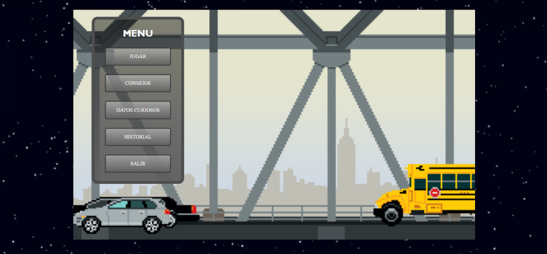
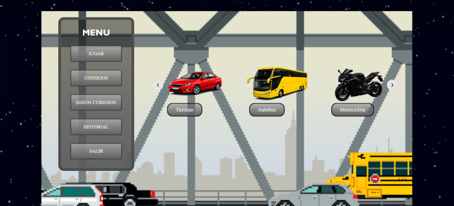
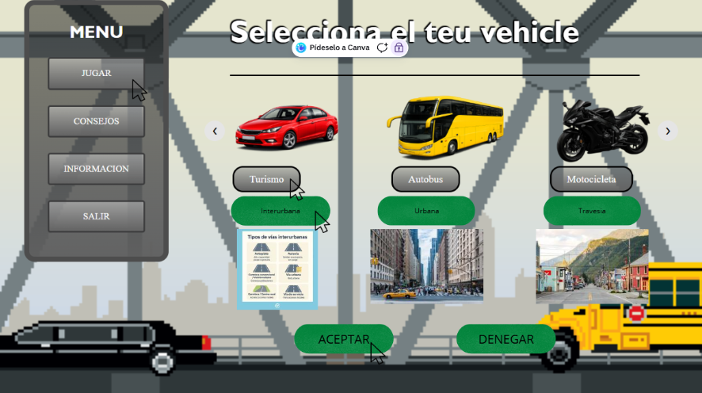
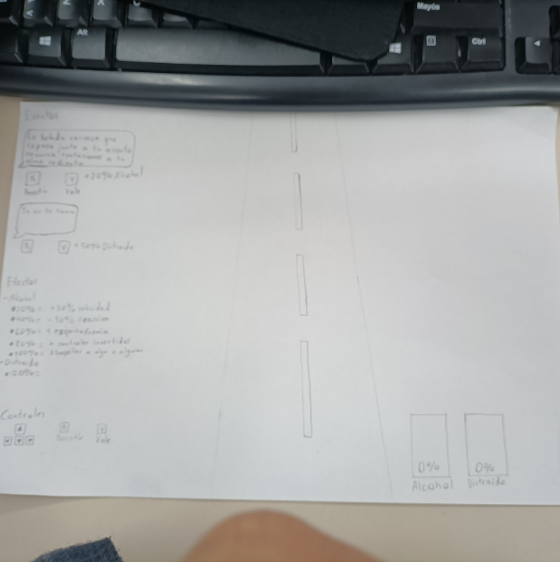
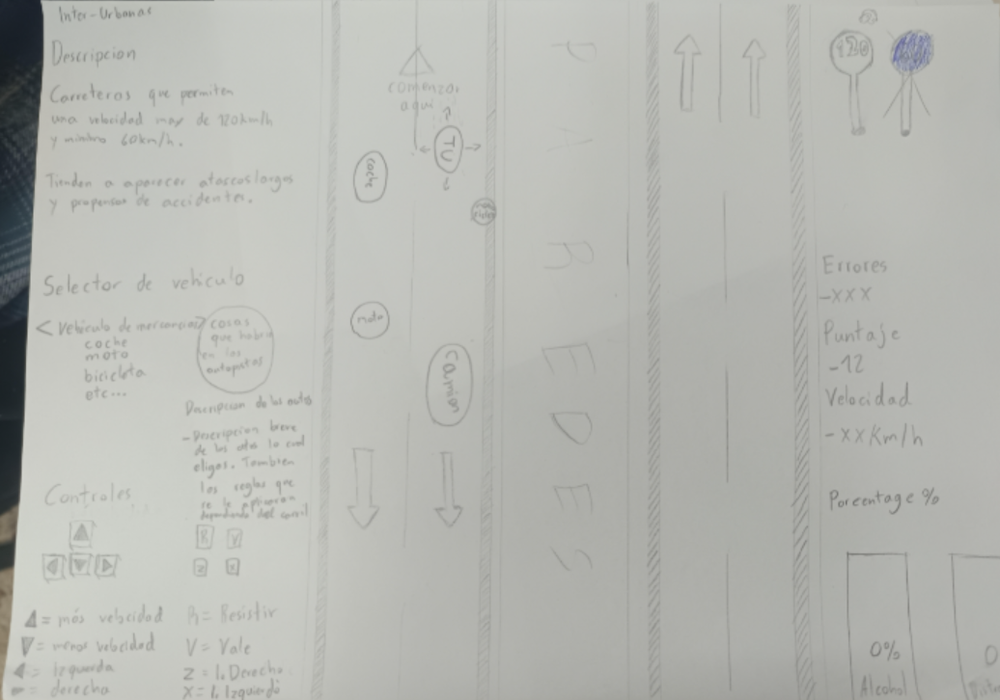
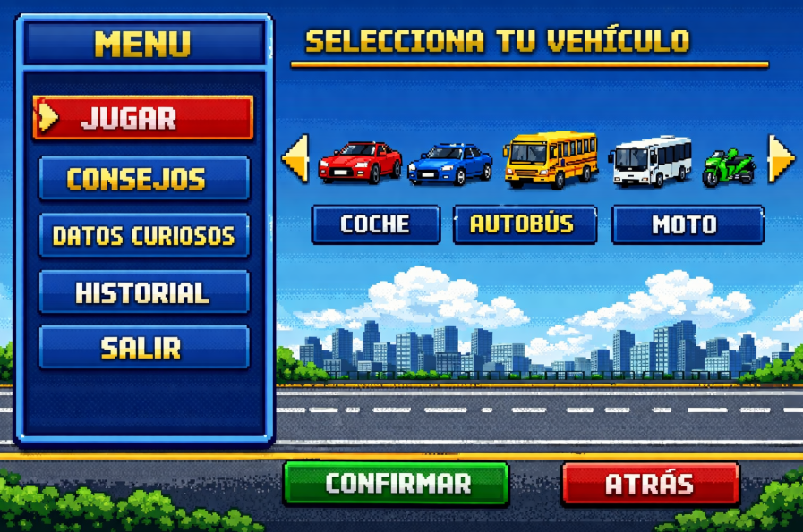

Projecte Java RACC
Explicació general del projecte
Aquest projecte consisteix a crear un videojoc de conducció responsable utilitzant HTML, CSS i JavaScript. La idea principal no és només fer un joc, sinó també conscienciar sobre problemes reals al volant, com les distraccions o el consum d’alcohol. El jugador controla un vehicle i ha de conduir evitant obstacles mentre apareixen diferents situacions que poden afectar la seva conducció. Això fa que el joc no sigui només d’habilitat, sinó també de presa de decisions.
Metodologia i organització
Abans de començar a programar, es va fer una planificació per tenir clar què es volia fer. Es va organitzar tota la informació en diferents documents, com la metodologia, el procediment, les idees del joc i les il·lustracions. El procés seguit ha estat progressiu: primer planificar, després buscar o crear imatges, fer dissenys (incloent dibuixos en paper) i finalment començar la programació. A mesura que avançàvem, anàvem revisant i millorant el treball.
Eines utilitzades
Per desenvolupar el projecte s’han utilitzat diverses eines. En programació, s’ha treballat amb l’ajuda de ChatGPT, Copilot i validadors de codi. Per a les imatges, s’han buscat recursos a internet i també s’han creat amb intel·ligència artificial quan no es trobaven opcions adequades. També s’han utilitzat eines d’edició com Pixlr o pàgines per eliminar fons, així com altres utilitats per trobar colors o traduir contingut.
Desenvolupament del joc
El desenvolupament va començar amb una versió molt bàsica on només hi havia un cotxe que es movia i alguns obstacles. Poc a poc es van anar afegint millores, com el control de la velocitat, l’aparició d’esdeveniments i un sistema de col·lisions. Un dels elements més importants del joc són els esdeveniments. Aquests simulen situacions reals, com rebre una notificació o sentir-se temptat a beure. El jugador pot decidir si acceptar l’esdeveniment o resistir-lo. Si l’accepta, rep efectes negatius com pitjor control o més dificultat. També es van afegir barres que representen el nivell d’intoxicació i distracció, que influeixen directament en la jugabilitat.



Disseny i il·lustracions
El disseny ha estat una part important del projecte. No es volia crear un joc visualment avorrit, així que s’han utilitzat imatges en estil pixel art i també se n’han creat algunes amb IA. A més, es van fer esbossos en paper per imaginar com seria el joc complet abans de programar-lo. Després es va treballar en menús, sliders i l’organització visual per millorar l’experiència de l’usuari.



Sistema de joc i mecàniques
El joc es basa a conduir correctament el màxim temps possible sense xocar. A mesura que passa el temps, la dificultat augmenta, apareixen més obstacles i més esdeveniments. Els efectes negatius, com la intoxicació o la distracció, afecten directament el control del vehicle, fent el joc més difícil i simulant situacions reals de conducció.
Tipus de carreteres i vehicles
Es preveu incloure diferents tipus de vies, com urbanes, interurbanes i autopistes, cadascuna amb les seves característiques. També es volen afegir diferents vehicles, com cotxes, motos, autobusos o patinets elèctrics. Cada vehicle tindrà avantatges i inconvenients per fer el joc més realista.


Treball en equip
El projecte s’ha realitzat en equip. En Jiachen s’ha encarregat principalment de la planificació, la documentació, el disseny i tot el desenvolupament del joc i el disseny de la pagina web.
Conclusió
És un projecte que combina programació, disseny i educació. Tot i que encara està en desenvolupament i falten algunes funcionalitats per implementar, ja té una base sòlida i una idea clara: ensenyar la conducció responsable d’una manera interactiva i dinàmica.